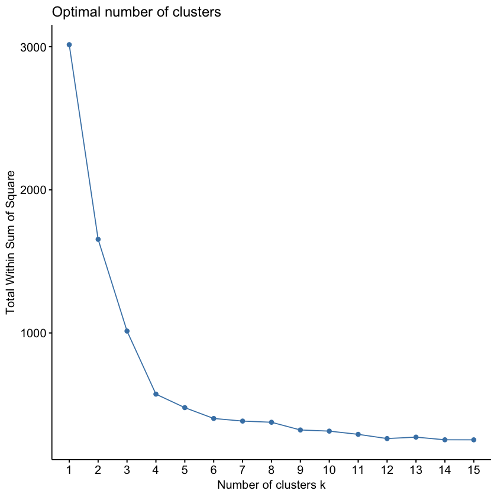
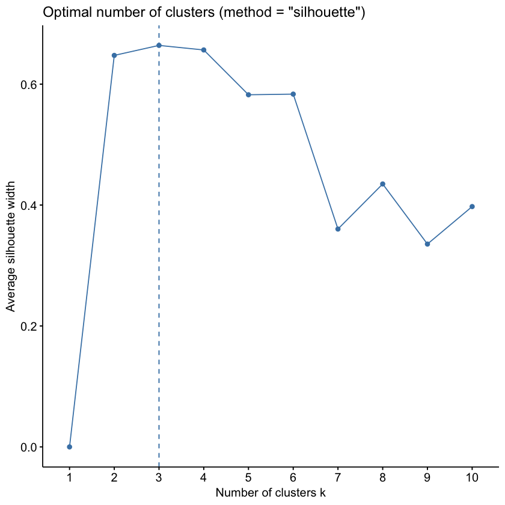
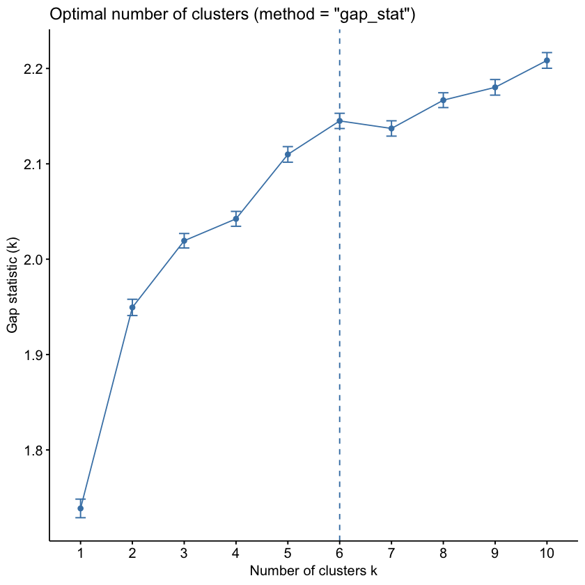

Topic 6.3 - 基于数据的分群方法 - K-Means 分群¶
1. 基于数据与算法的分群方式的概念¶
基于数据与算法的分群方式，就是不依赖于分析师预先设定的规则，而是让算法在数据中自动发现自然群组的一种方式：
-
这种方法主要是要应对基于规则分群可能存在的问题：
- (1) 分界线有一定任意性，可能无法准确反映个体的实际行为模式
- (2) 在分界线附近的个体可能行为非常相似，却被划入不同群体
- (3) 基于预先设计的规则，可能遗漏数据中真实存在的复杂的客户行为模式
-
然而，基于数据与算法的分群方式虽然能捕捉到更复杂的规律，但结果的解释需要额外分析，可能不如基于规则的分群直观易懂
本节我们使用的分群方法叫做 K-Means 聚类（K-Means Clustering）：
- 它是一种无监督学习算法，能够根据数据的特征自动将数据划分为 K 个群体
- 使得同一群体内的客户相似度较高
- 而不同群体之间的客户相似度较低
K-Means 聚类分为以下三个步骤：
- (1) 对数据进行标准化处理，使得不同特征（其实就是数据表中的列）具有相同的量纲
- (2) 运行 K-Means 算法，让算法自动找到最佳的划分方式
- (3) 对比多种 K 值的结果，选择最合适的 K 值来定义客户群体
首先，我们先导入本节要使用的包和数据：
library(tidyverse)
library(lubridate)
purchases <- read_csv("cdnow_purchases.csv")
purchases |> slice_head(n = 5)
| users_id <dbl> | date <date> | cds <dbl> | amt <dbl> |
|----------------|-------------|-----------|-----------|
| 1 | 1997-01-01 | 1 | 11.77 |
| 2 | 1997-01-12 | 1 | 12.00 |
| 2 | 1997-01-12 | 5 | 77.00 |
| 3 | 1997-01-02 | 2 | 20.76 |
| 3 | 1997-03-30 | 2 | 20.76 |
customer_aggregates <-
purchases |>
group_by(users_id) |>
summarise(
last_purch_date = max(date),
frequency = n(),
monetary = sum(amt),
) |>
ungroup() |>
mutate(
# interval() 函数计算两个日期之间的时间间隔
# %/% months(1) 将时间间隔转换为月数
recency = interval(last_purch_date, analysis_date) %/% months(1)
) |>
select(users_id, recency, frequency, monetary)
rfm_data <-
customer_aggregates |>
mutate(
r_tile = ntile(recency, 5),
f_tile = ntile(frequency, 5),
m_tile = ntile(monetary, 5)
) |>
mutate(
# 将 R 的分数反转，使得 R = 5 代表最近购买的客户，R = 1 代表最久未购买的客户
r_tile = max(r_tile) - r_tile + 1,
) |>
select(users_id, recency, r_tile, frequency, f_tile, monetary, m_tile)
rfm_data
| users_id <dbl> | recency <dbl> | r_tile <dbl> | frequency <int> | f_tile <int> | monetary <dbl> | m_tile <int> |
|----------------|---------------|--------------|-----------------|--------------|----------------|--------------|
| 1 | 18 | 1 | 1 | 1 | 11.77 | 1 |
| 2 | 17 | 1 | 2 | 3 | 89.00 | 4 |
| 3 | 1 | 5 | 6 | 5 | 156.46 | 5 |
| 4 | 6 | 4 | 4 | 4 | 100.50 | 4 |
| 5 | 5 | 4 | 11 | 5 | 385.61 | 5 |
| ... | ... | ... | ... | ... | ... | ... |
| 23566 | 15 | 2 | 1 | 3 | 36.00 | 3 |
| 23567 | 15 | 2 | 1 | 3 | 20.97 | 2 |
| 23568 | 14 | 3 | 3 | 4 | 121.70 | 4 |
| 23569 | 15 | 2 | 1 | 3 | 25.74 | 2 |
| 23570 | 15 | 2 | 2 | 4 | 94.08 | 4 |
2. K-Means 数据标准化处理¶
(1) 数据标准化处理的概念¶
标准化处理大家比较熟悉，就是每列数据减去这列的均值再除以这列的标准差：
要做到这一点，其实我们直接使用 mutate() 函数是可以做到的：
rfm_scaled_old <-
rfm_data |>
mutate(
recency_scaled = (recency - mean(recency)) / sd(recency),
frequency_scaled = (frequency - mean(frequency)) / sd(frequency),
monetary_scaled = (monetary - mean(monetary)) / sd(monetary)
) |>
select(users_id, recency, recency_scaled, frequency, frequency_scaled, monetary, monetary_scaled)
rfm_scaled_old
| users_id <dbl> | recency <dbl> | recency_scaled <dbl> | frequency <int> | frequency_scaled <dbl> | monetary <dbl> | monetary_scaled <dbl> |
|----------------|---------------|----------------------|-----------------|------------------------|----------------|-----------------------|
| 1 | 18 | 1.06863992 | 1 | -0.412833396 | 11.77 | -0.39145107 |
| 2 | 17 | 0.90062912 | 2 | -0.201709632 | 89.00 | -0.07089514 |
| 3 | 1 | -1.78754365 | 6 | 0.642785422 | 156.46 | 0.20910878 |
| 4 | 6 | -0.94748966 | 4 | 0.220537895 | 100.50 | -0.02316248 |
| 5 | 5 | -1.11550046 | 11 | 1.698404239 | 385.61 | 1.16023389 |
| ... | ... | ... | ... | ... | ... | ... |
| 23566 | 15 | 0.56460752 | 1 | -0.412833396 | 36.00 | -0.29088044 |
| 23567 | 15 | 0.56460752 | 1 | -0.412833396 | 20.97 | -0.35326494 |
| 23568 | 14 | 0.39659672 | 3 | 0.009414131 | 121.70 | 0.06483164 |
| 23569 | 15 | 0.56460752 | 1 | -0.412833396 | 25.74 | -0.33346627 |
| 23570 | 15 | 0.56460752 | 2 | -0.201709632 | 94.08 | -0.04980976 |
值得注意的一点是，标准化之后的数据，它们的均值是 0，标准差是 1：
print(mean(rfm_scaled_old$recency_scaled))
print(mean(rfm_scaled_old$frequency_scaled))
print(mean(rfm_scaled_old$monetary_scaled))
print(sd(rfm_scaled_old$recency_scaled))
print(sd(rfm_scaled_old$frequency_scaled))
print(sd(rfm_scaled_old$monetary_scaled))
[1] 0
[1] 0
[1] 0
[1] 1
[1] 1
[1] 1
(2) 使用 recipe() 函数进行数据标准化处理¶
我们这里介绍一种更专业的标准化处理方法 - recipe() 函数：
recipe()函数是recipes包中的一个函数，专门用于数据预处理和特征工程- 我们推荐使用这个函数来进行数据标准化处理，因为它提供了更灵活和可重复的方式来定义和应用数据预处理步骤
使用 recipe() 函数进行数据标准化处理的步骤如下：
- 首先，我们定义一个数据预处理的配方（recipe），其实就是一个公式，指定我们要处理的数据和要应用的预处理步骤：
library(recipes)
rfm_rec <- recipe(~ recency + frequency + monetary, data = rfm_data) |>
step_normalize(all_numeric_predictors())
-
在这段代码中：
recipe(~ recency + frequency + monetary, data = rfm_data)定义了一个公式，指定我们要处理的变量是rfm_data中的recency、frequency和monetarystep_normalize(all_numeric_predictors())指定了我们要对所有数值型预测变量进行标准化处理- 我们将结果赋值给
rfm_rec变量，这个变量目前只是一个预处理的公式，它没有任何计算，也没有实际应用到数据上
-
接下来，我们需要使用
prep()函数来准备这个预处理配方：
rfm_prepped <- prep(rfm_rec)
rfm_prepped
── Recipe ──────────────────────────────────────────────────────────────────────
── Inputs
Number of variables by role
predictor: 3
── Training information
Training data contained 23570 data points and no incomplete rows.
── Operations
Centering and scaling for: recency, frequency, monetary | Trained
-
在这段代码中：
prep(rfm_rec)函数会根据我们定义的预处理公式rfm_rec来准备预处理步骤- 在这个步骤中，R 会计算出
recency、frequency和monetary这三个变量的均值和标准差 - 这些信息会被存储在
rfm_prepped这个对象中
-
最后，我们使用
bake()函数来应用这个预处理配方到我们的数据上：
rfm_scaled <- bake(rfm_prepped, new_data = NULL)
rfm_scaled
| recency <dbl> | frequency <dbl> | monetary <dbl> |
|---------------|-----------------|----------------|
| 1.06863992 | -0.412833396 | -0.39145107 |
| 0.90062912 | -0.201709632 | -0.07089514 |
| -1.78754365 | 0.642785422 | 0.20910878 |
| -0.94748966 | 0.220537895 | -0.02316248 |
| -1.11550046 | 1.698404239 | 1.16023389 |
| ... | ... | ... |
| 0.56460752 | -0.412833396 | -0.29088044 |
| 0.56460752 | -0.412833396 | -0.35326494 |
| 0.39659672 | 0.009414131 | 0.06483164 |
| 0.56460752 | -0.412833396 | -0.33346627 |
| 0.56460752 | -0.201709632 | -0.04980976 |
相比于直接使用 mutate() 函数进行标准化处理，使用 recipe() 函数看上去是要更复杂一些的
-
但是使用
recipe()函数其实是遵循了标准化的模型训练和应用的流程 -
如果我们把数据标准化理解为一个数据预处理模型的话，那么：
recipe()函数就是模型定义：这一步没有任何计算产生，只是定义了我们要做什么样的预处理prep()函数就是模型训练：它根据我们定义的预处理步骤来计算出必要的统计量（比如均值和标准差）bake()函数就是模型推理：它使用训练好的模型来应用到数据上，做到数据的标准化处理
事实上，这种先模型定义 -> 训练 -> 推理的流程：
- 不仅适用于数据预处理，也适用于大家之后接触的各种机器学习算法
- 我们马上要讲的 K-Means 聚类算法也是一样的流程
3. K-Means 聚类算法的运行与结果分析¶
(1) K-Means 聚类算法的运行步骤¶
在 R 中部署 K-Means 聚类算法，有以下两个步骤：
- 首先，我们使用
kmeans()函数来运行 K-Means 聚类算法，这个函数是 R 自带的，不需要额外安装任何包：
set.seed(123)
kmeans_3 <- kmeans(rfm_scaled, centers = 3)
-
在这段代码中：
set.seed(123)是为了保证我们每次运行代码时得到的结果都是一样的，因为 K-Means 聚类算法中有一些随机性kmeans(rfm_scaled, centers = 3)运行 K-Means 聚类算法，rfm_scaled是我们之前标准化处理后的数据，centers = 3表示我们希望将数据划分成 3 个群体- 这一步骤事实上进行了模型的定义个训练两个步骤，这段代码运行完成之后，R 就已经根据
rmf_scaled数据，分配好了一个划分依据了
-
接下来，我们就把这个划分依据应用到我们的数据上，看看每个客户被划分到了哪个群体：
library(broom)
rfm_clustered <-
augment(kmeans_3, rfm_data)
rfm_clustered
| users_id <dbl> | recency <dbl> | r_tile <dbl> | frequency <int> | f_tile <int> | monetary <dbl> | m_tile <int> | .cluster <fct> |
|----------------|---------------|--------------|-----------------|--------------|----------------|--------------|----------------|
| 1 | 18 | 1 | 1 | 1 | 11.77 | 1 | 2 |
| 2 | 17 | 1 | 2 | 3 | 89.00 | 4 | 2 |
| 3 | 1 | 5 | 6 | 5 | 156.46 | 5 | 3 |
| 4 | 6 | 4 | 4 | 4 | 100.50 | 4 | 3 |
| 5 | 5 | 4 | 11 | 5 | 385.61 | 5 | 3 |
| ... | ... | ... | ... | ... | ... | ... | ... |
| 23566 | 15 | 2 | 1 | 3 | 36.00 | 3 | 2 |
| 23567 | 15 | 2 | 1 | 3 | 20.97 | 2 | 2 |
| 23568 | 14 | 3 | 3 | 4 | 121.70 | 4 | 2 |
| 23569 | 15 | 2 | 1 | 3 | 25.74 | 2 | 2 |
| 23570 | 15 | 2 | 2 | 4 | 94.08 | 4 | 2 |
-
在这段代码中：
augment(kmeans_3, rfm_data)函数会把 K-Means 聚类算法的结果（kmeans_3）应用到数据（rfm_data）上，给每个客户分配一个群体标签- 这个群体标签会被存储在
.cluster这个新列中，表示每个客户被划分到了哪个群体
(2) K-Means 聚类算法结果的分析¶
到此为止，K-Means 聚类算法在我们的数据上已经完成了划分，我们得到了每个客户所属的群体标签
- 但是事实上，这个群体标签只是一个数字，并没有具体的含义，我们也不知道为什么算法会把某些客户划分到一起，某些客户划分到另一个群体
- 我们需要进一步分析每个群体的特征，才能理解这些群体代表的客户类型
首先，我们可以用可视化的方法来看看每个群体在 R、F、M 这三个维度上的分布情况：
- 注意，因为我们数据有3个维度，因此我们得画一个 3D 图
- 画 3D 图使用
ggplot2包会有些不方便，我们可以使用plotly包来画一个交互式的 3D 图：
library(plotly)
library(htmlwidgets)
p <- plot_ly(
data = rfm_scaled_clustered,
x = ~recency,
y = ~frequency,
z = ~monetary,
color = ~.cluster,
colors = c("#7F77DD", "#1D9E75", "#D85A30"),
type = "scatter3d",
mode = "markers",
marker = list(size = 3, opacity = 0.6)
) |>
layout(
scene = list(
xaxis = list(title = "Recency (scaled)", range = c(-2, 1)),
yaxis = list(title = "Frequency (scaled)", range = c(-1, 20)),
zaxis = list(title = "Monetary (scaled)", range = c(-1, 20))
),
legend = list(title = list(text = "Cluster"))
)
saveWidget(p, "kmeans_3d.html", selfcontained = TRUE)
之后，我们可以计算一下每个群体的平均 R、F、M 分数，看看每个群体的客户在这三个维度上的表现：
rfm_clustered |>
group_by(.cluster) |>
summarise(
recency = mean(recency),
frequency = mean(frequency),
monetary = mean(monetary),
n_customers = n(),
) |>
ungroup()
| .cluster <fct> | recency <dbl> | frequency <dbl> | monetary <dbl> | n_customers <int> |
|----------------|---------------|-----------------|----------------|-------------------|
| 1 | 1.126667 | 36.380000 | 1987.14273 | 150 |
| 2 | 15.328544 | 1.403451 | 43.46835 | 16287 |
| 3 | 3.437123 | 5.796159 | 209.48763 | 7133 |
从作图和的分组统计的结果中，我们可以看到，算法在分类的时候，有以下倾向：
- Cluster 1（购买时间极近、频率极高、消费金额极大，但仅有约 150 位客户）→ 精英忠诚客户
- Cluster 2（距上次购买已很久、购买频率极低、消费金额极少）→ 已流失的低价值客户
- Cluster 3（购买时间较近、频率与消费金额居中）→ 稳定的中等价值客户
4. K-Means 聚类算法中 K 值的选择¶
(1) K 值选择方法概览¶
选择合适的 K 值，其实就是选择合适的群体数量，通常我们会使用一些方法来帮助我们做出选择：
- 肘部法（Elbow Method）
- 轮廓系数法（Silhouette Method）
- 差距统计法（Gap Statistic）
之前我们简单说过聚类的一个原则，那就是同一群体内的客户相似度较高，而不同群体之间的客户相似度较低：
-
在这个原则下，肘部法和差距统计法是各自选择了一种评判标准：
-
肘部法则是通过评估群体内的客户相似度来选择 K 值的：
- 总误差平方和（Total Within-Cluster Sum of Squares） 是衡量群体内客户相似度的一个指标，越小越好，说明群体内客户越相似
- 但是有个问题是，随着 K 值的增加，误差平方和会不断减少
- 因此只看最低的误差平方和是不行的，因为把数据直接分到每个个体一组，误差平方和是最低的
- 所以我们需要找到那个误差下降明显变缓的 K 值作为最佳选择
-
差距统计法则是通过评估群体之间的客户相似度来选择 K 值的：
- 这个计算方法是，我的 K-Means 聚类结果，会比我随机将数据分成 K 个群体，得到多少提升呢，这个提升就是 Gap Statistic，越大越好
- 这个数字不像误差平方和那样是一个单向变动的指标，它是先上升，但是到了某个 K 值之后，提升就不明显了，甚至可能下降了
- 所以我们这里就找那个会让 Gap Statistic 由增转降的 K 值作为最佳选择
-
-
而轮廓系数法则是这两个评判标准的结合：
-
轮廓系数（Silhouette Coefficient） 是一个综合考虑了群体内客户相似度和群体间客户相似度的指标，范围在 -1 到 1 之间，越大越好：
- 轮廓系数接近 1，说明客户与同一群体内的客户非常相似，与其他群体的客户非常不同
- 轮廓系数接近 0，说明客户与同一群体内的客户相似度和与其他群体的客户相似度差不多
- 轮廓系数接近 -1，说明客户与同一群体内的客户非常不同，与其他群体的客户非常相似
-
因此我们可以选择平均轮廓系数最高的 K 值作为最佳选择
-
注意，三种方法给予的原理不同，因此它们可能会给出不同的 K 值建议，这个是正常结果
(2) K 值选择方法的实际应用¶
我们先将数据筛选一个子样本，因为这几个算法的计算量比较大，我们用一个小样本来演示一下：
library(factoextra)
set.seed(42)
rfm_scale_sample <-
rfm_scaled |>
sample_n(1000) # 筛选 1000 个客户的子样本
这三种方法在 R 的 factoextra 包的 fviz_nbclust() 函数中都有实现，我们可以直接使用这个函数来帮助我们选择合适的 K 值：
- 肘部法：
fviz_nbclust(
rfm_scale_sample,
kmeans,
method = "wss", # 使用 Within-cluster sum of squares 的肘部法
k.max = 15, # 最大考虑到 K = 15
nstart = 5 # K-Means 跑 5 次，取最优结果
)

- 轮廓系数法：
fviz_nbclust(
rfm_scale_sample,
kmeans,
method = "silhouette"
)

- 差距统计法：
fviz_nbclust(
rfm_scale_sample,
kmeans,
method = "gap_stat",
nstart = 10, # K-Means 跑 10 次，取最优结果
iter.max = 50 # K-Means 最多迭代 50 次
)
